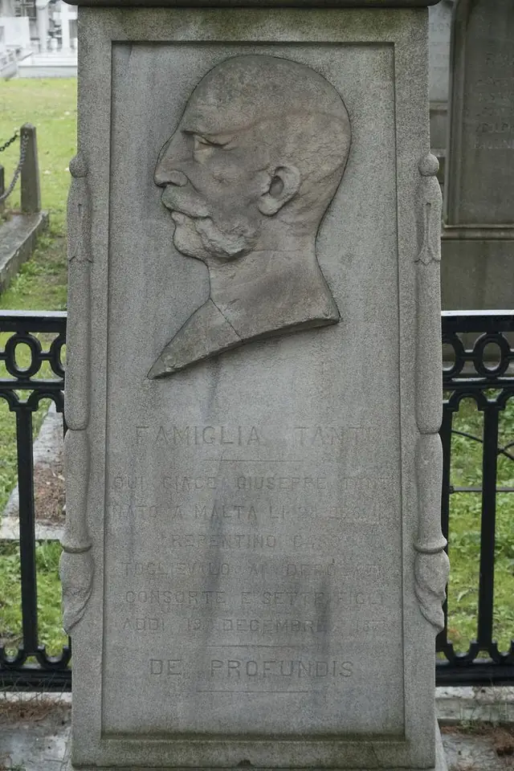

The Great Emigration & Mickiewicz
Grave of Tadeusz Gasztowtt (Seyfeddin), Feriköy
A Paris-born Pole who became the Young Turk 'Seyfeddin' and in 1909 persuaded the Turks to honour Mickiewicz – he rests in the Feriköy cemetery.


- District
- Şişli
- Period
- 1909 / 1936
- Visiting
- Limited access
The story
In the Latin cemetery at Feriköy lies a Pole born in Paris who became a Young Turk, took the name Seyfeddin – and persuaded Turkey's new rulers to honour Mickiewicz in public.
Tadeusz Gasztowtt was born in 1881 into a family of Polish political émigrés. He came to Istanbul as a newspaper correspondent shortly before the Young Turk revolution of 1908, converted to Islam and threw in his lot with the Committee of Union and Progress. It was on his initiative that in August 1909 the Committee held celebrations in honour of the Poles who had fought on the Ottoman side in the Crimean War and of Adam Mickiewicz; Gasztowtt spoke that day in front of the poet's house. A year later, with Hüseyin Hasib, he published the fortnightly Kürsi-i Milel / La Tribune des Peuples in French and Ottoman Turkish.
His friendship for Turkey went beyond words: he volunteered for the Italo-Turkish war of 1911–12, and in 1913 he published the book Turcya a Polska ('Turkey and Poland'). In alliance with Turkey he saw a chance for the Polish cause. When Poland was reborn he served it as a diplomat – first in the Polish mission on the Bosphorus, later as press attaché in Ankara.
He died in Istanbul on 22 January 1936. Although a Muslim, he was buried in the Catholic cemetery; the historian Paulina Dominik found his gravestone here, which calls him an employee of the Polish Embassy in Turkey and asks that his memory be honoured.
How to visit
The grave is in the Latin Catholic cemetery on Abide-i Hürriyet Caddesi – the same cemetery as the memorial to Consul Rychlewicz. We do not know its exact position, so the pin only marks the cemetery: ask the caretaker for 'Tadeusz Gasztoft', as the name is spelt on the stone. The gate may be closed – ring, or ask the caretaker – and opening times vary, so check before you go.
People
- Tadeusz Gasztowtt (Seyfeddin)
- Adam Mickiewicz
- Hüseyin Hasib
- Paulina Dominik
Location
Şişli, Istanbul · Coordinates: 41.05330, 28.98536
The map position is approximate.